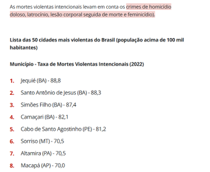

Tropa de Elite: El enemigo sigue siendo el mismo
5 de mayo de 2026
Tropa de Elite sigue al capitán Nascimento, oficial del BOPE, a finales de la década de 1990. La narrativa muestra la brutalidad del narcotráfico, la corrupción policial y el desgaste físico y psicológico de la tropa.
El BOPE es una unidad de élite del estado de Río de Janeiro, creada para el combate en operaciones en áreas de difícil acceso. La actuación del BOPE está marcada por la aplicación de estrategias militares en el policiamiento, lo que lo caracteriza como una fuerza policial militarizada.
A diferencia de Brasil, la mayor parte de las fuerzas policiales en el mundo no es militarizada, es decir, no posee organización, entrenamiento ni jerarquía basados en el modelo militar.
En 1966, se realizó un análisis en Estados Unidos, con una lectura explícita de la actuación de la policía en los guetos, utilizando una analogía con Argelia bajo ocupación francesa. La idea central era que:
Los guetos negros en Estados Unidos eran territorios ocupados. La policía no era vista como una fuerza de “mantenimiento del orden”, sino como un ejército de ocupación que controlaba, reprimía y vigilaba a una población colonizada.
Esta lectura encajaba en el concepto de colonialismo interno, influenciado por autores como Frantz Fanon (especialmente «Los condenados de la tierra») y por teóricos del Tercer Mundo.
La represión aumenta en todo el país, en subprefecturas militarizadas, sin embargo la caída del crimen no acompaña. Lo que ocurre, en realidad, es el aumento del miedo de la población local y del odio hacia la propia corporación.
El Instituto Fogo Cruzado alerta sobre la violencia policial. En 2023, casi 2 mil personas fueron asesinadas en acciones policiales.
Como se muestra en la imagen, 4 de las 5 ciudades más violentas del país están en Bahía, que lidera la letalidad policial.

Estas políticas no logran reducir la criminalidad. Las cámaras corporales ayudan, pero no eliminan la violencia policial.
¡El enemigo sigue siendo el mismo!
Referência: Agência Brasil
Referência: Agência Brasil
Referência: Brasil de Fato
Referência: Brasil de Fato
Referência: CNN Brasil
Referência: G1 Globo
Referência: G1 Globo
Referência: G1 Globo
Referência: InfoMoney
Referência: DisembodiedTerritories
Referência: En Wikipedia